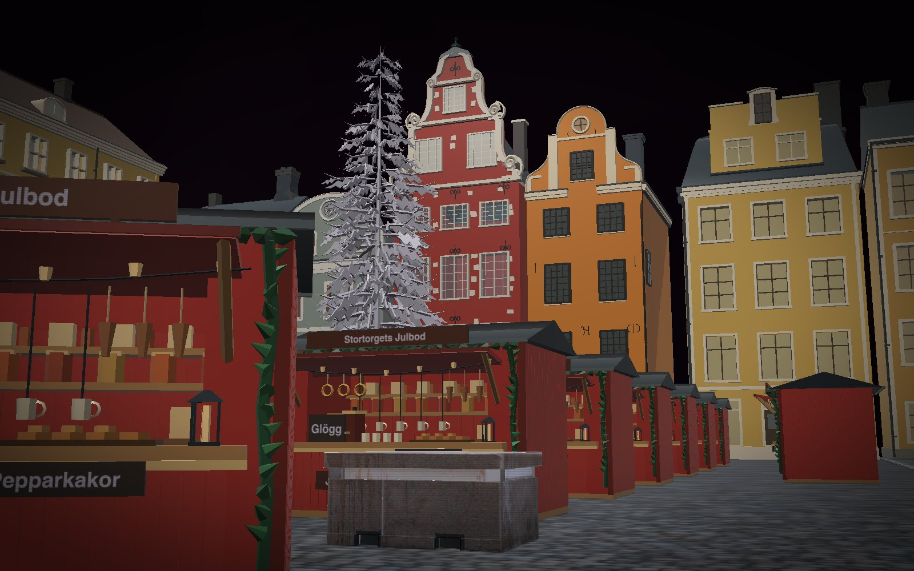
13 constructs, placed 53 times. Drag to turn it; the buttons are its views; P shows how each part is known, S shows it as a solid in its own colours.
Made for this world
13 constructs made for Stortorget at Christmas, each its own construct: open one to see it alone, with its parts and its record.
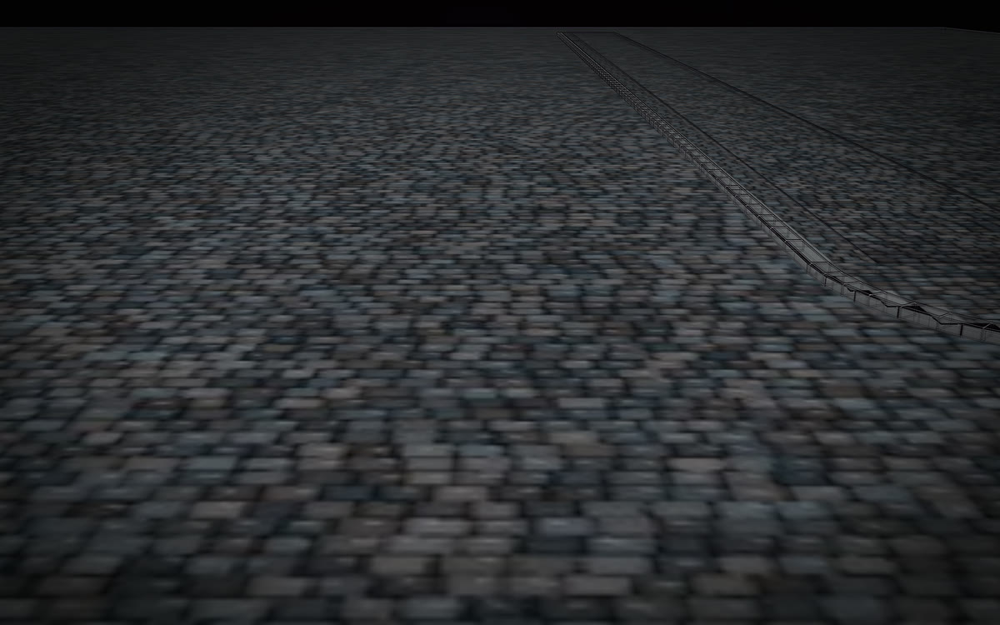
Stortorget: the square, its setts and kerbs
placed once
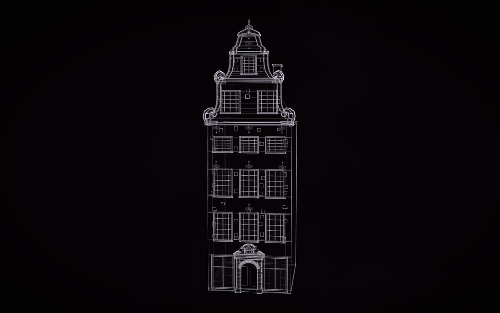
Schantzska huset, Stortorget 20
placed once
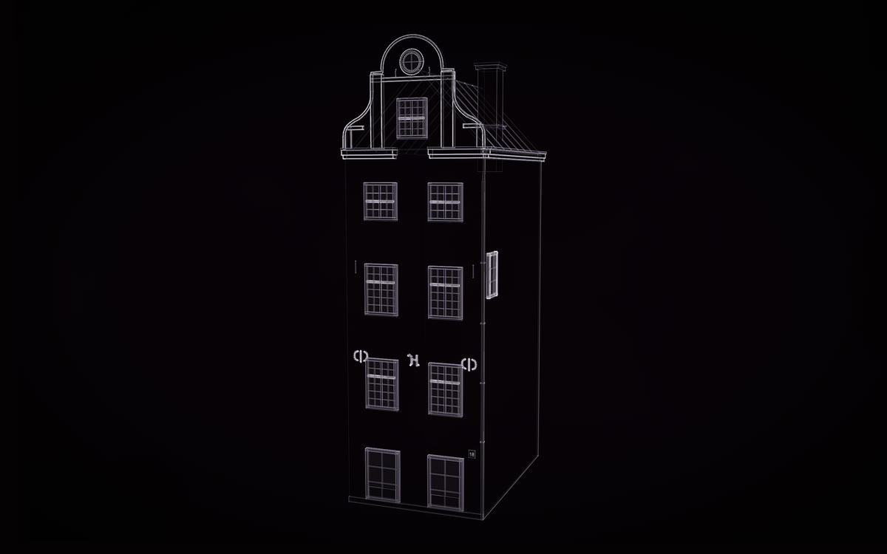
Seyfridtzska huset, Stortorget 18
placed once
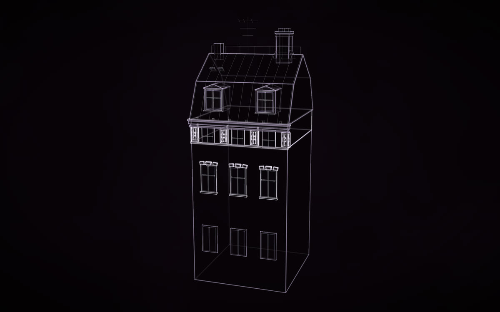
The russet mansard house (behind, left)
placed once
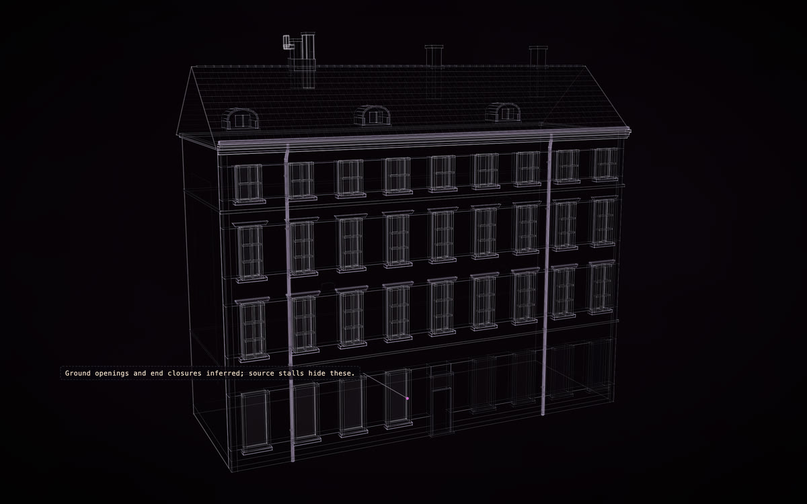
The long yellow range (left)
placed once
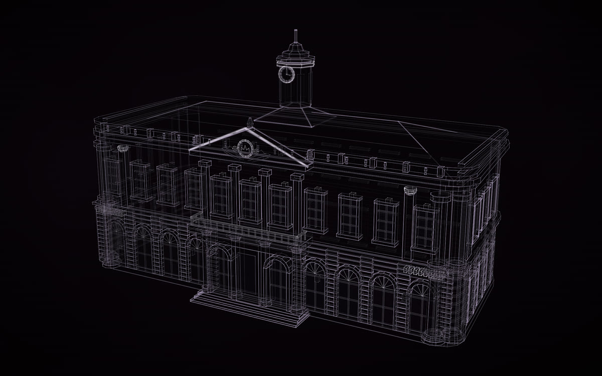
Börshuset, the Nobel Prize Museum
placed once
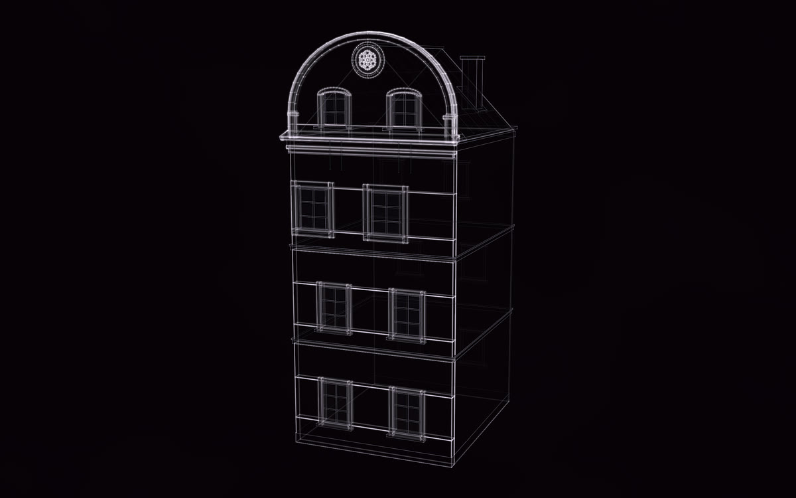
The sage curved-gable house (No. 22 uncertain)
placed once
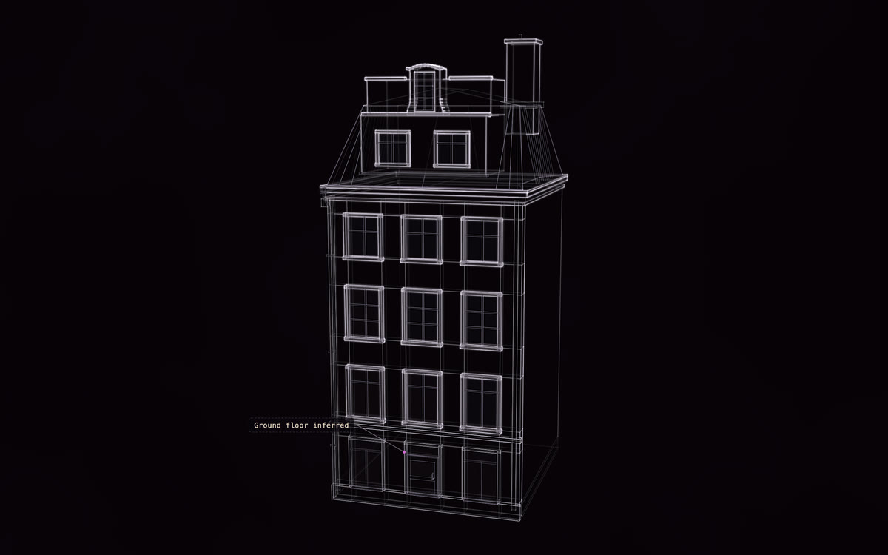
The yellow mansard house (address uncertain)
placed once
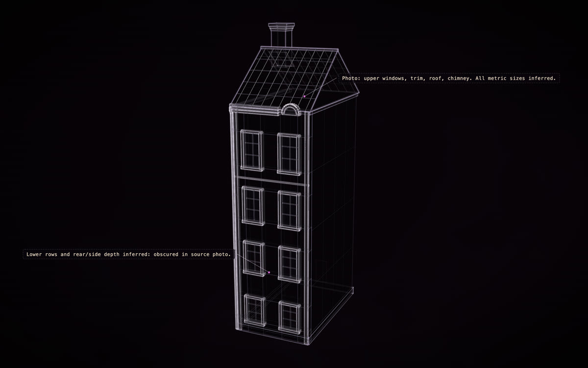
The narrow ochre house (right)
placed once
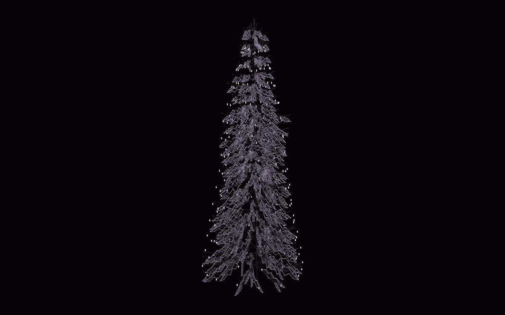
The Christmas spruce
placed once
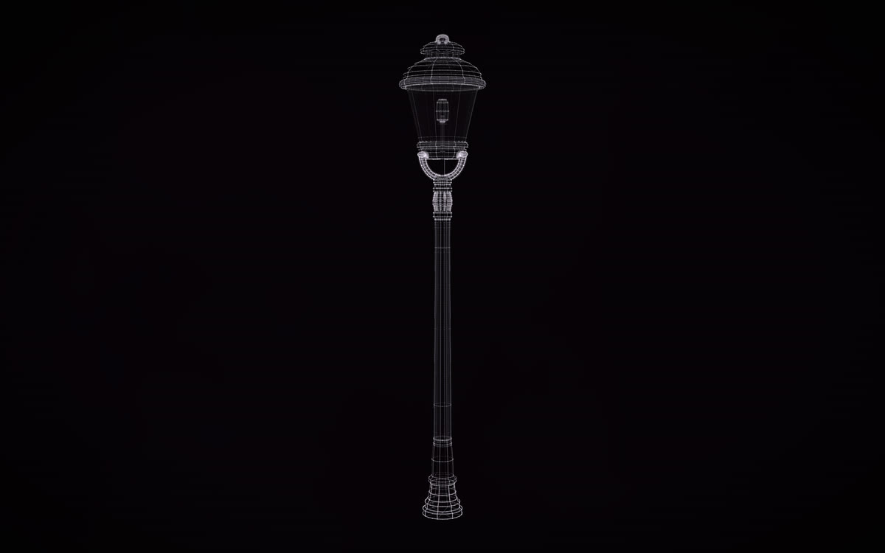
Gas-style post lamp
placed once
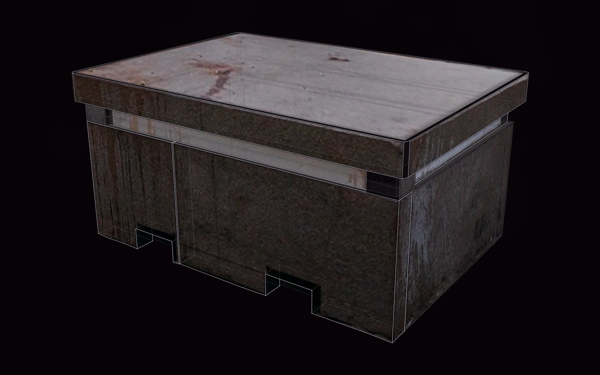
The granite block
placed once
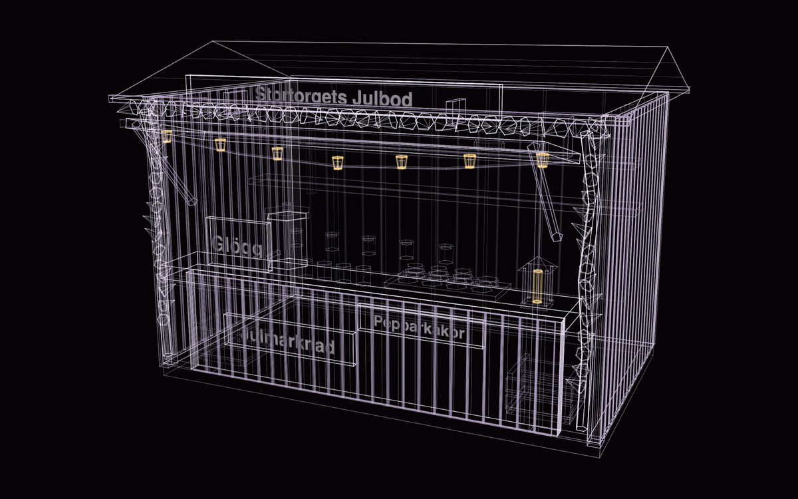
Stortorgets Julbod, a Christmas market stall
placed 41 times